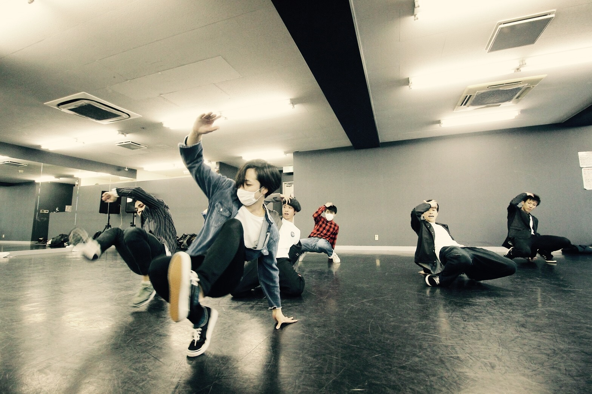
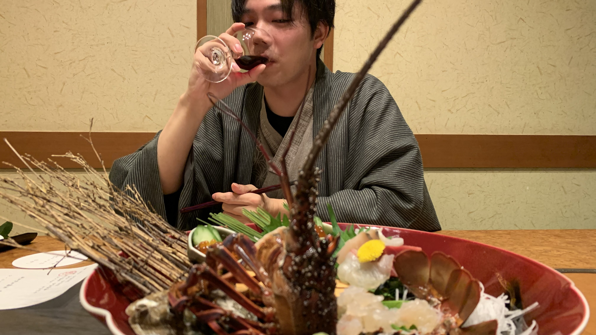
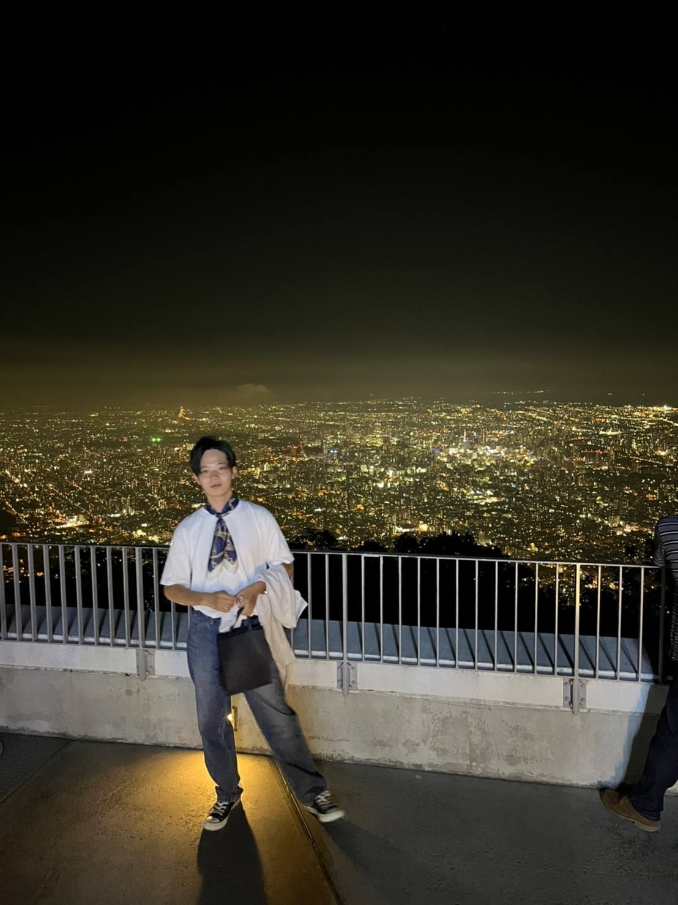
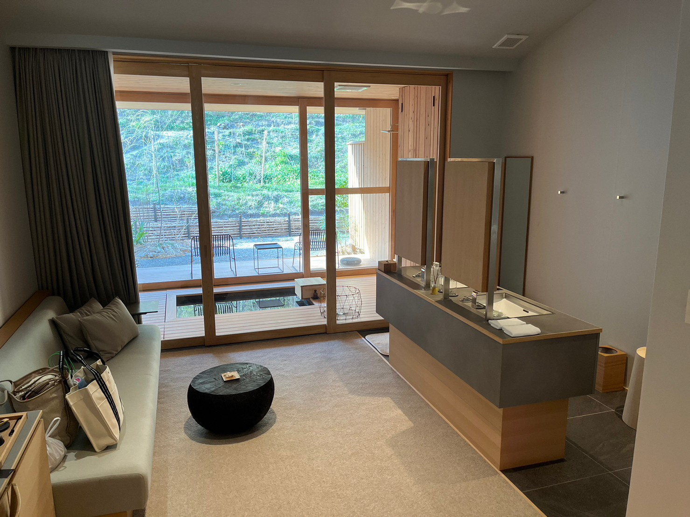
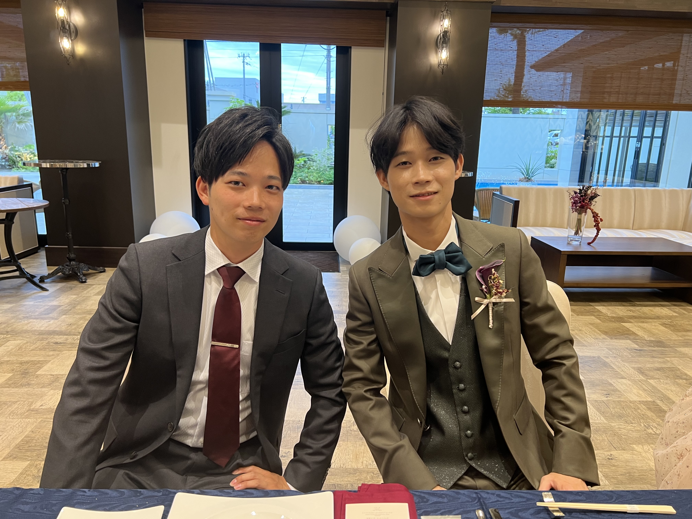

ABOUT
-私について-
私の人生を見る
| 名前 | 村尾 雄大 |
| 生年月日 | 1994年7月26日 |
| 出身地 | 兵庫県 |
| 趣味 | 旅行、音楽鑑賞 |
| 特技 | 剣道、ダンス |
| 自分を一言で | コツコツ型の真面目人間 |
＜モットー＞
曲がったことが大嫌い。
だが時には、枠からはみ出していく。
＜長所＞
コツコツと物事に励むこと
自分の軸を持っていること
＜短所＞
一つの物事に集中してしまうこと
リーダー経験が少ないこと
＜周りからの評価＞
愛されキャラ
面倒見がいい
~私の人生~






▶︎
閉じる